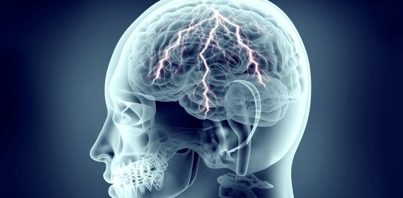
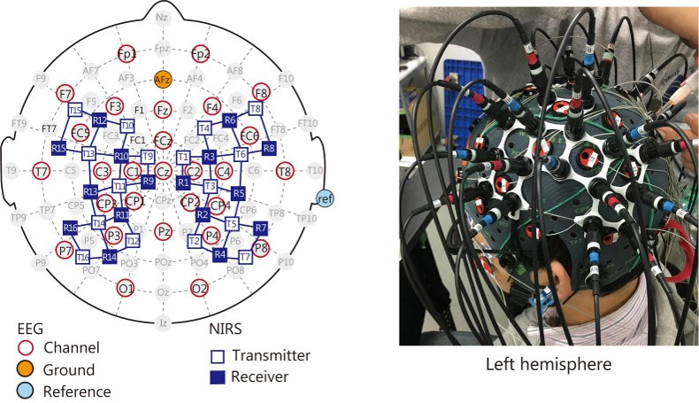

DÜNYA EPİLEPSİ GÜNÜ
Ayakta tedavi başvuruları içinde baş ağrısından sonra en sık görülen ikinci nörolojik hastalık Epilepsi
Her yıl Şubat ayının ikinci pazartesi günü dünyada Uluslararası Epilepsi Günü olarak kabul ediliyor. Kişilerin bir araya gelip tek bir ses ile hastalığın sosyal ve tıbbi yönlerine odaklanması, tüm epilepsi hastalarının, diğer insanlardan bir farklarının olmadığı ve yalnız olmadıkları bilincinin aşılanması hedeflenmektedir.
EPİLEPSİ NEDİR?
"Sara Hastalığı" olarak da bilinen epilepsi, kısa süreli beyin fonksiyon bozukluğuna bağlıdır ve beyin hücrelerinde geçici anormal elektrik yayılması sonucu ortaya çıkar.
Nöbetler ile kendini belli eder. Epilepsi nöbetleri, ani şekilde ortaya çıkar ve beynin tümüne ya da belirli bir bölümüne yayılır. Bazı epilepsi nöbetlerinde bilinç kaybı, kontrolsüz vücut harekeleri olabileceği gibi, bazı nöbetlerde belirtiler silik hissedilir.
İnme, asfiksi, enfeksiyonlar, otoimmün bozukluklar, travma ve tümörler gibi faktörler epileptik nöbetleri tetikleyebilmektedir (Martinez vd., 2021; Milligan, 2021). Edinilmiş bir nedenin yokluğunda, sebepsiz tekrarlayan nöbetler veya idiyopatik epilepsi varlığı, altta yatan bir genetik anormallik konusunda güçlü bir şüphe uyandırmaktadır. (Thomas ve Berkovic, 2014). Genetik nedenlerin epilepsilerin en az %30’unu oluşturduğu öne sürülmektedir (Orsini vd., 2018).
Dünyada epilepsi prevalansı yaklaşık %1 olarak öngörülmektedir. Bu tahmine göre Türkiye’de 700.000 kişide epilepsi mevcuttur. Dünyada yaklaşık 65 milyon kişide epilepsi olduğu tahmin edilmektedir. Bu hastaların %80’nin gelişmekte olan ülkelerde yaşadığı düşünülmekte ve her yıl bu sayıya 40-70/100.000 yeni olgu ilave olmaktadır (Öztürk, 2021).
Hastalık, erkek ve kadınlarda ırk ayrımı olmaksızın eşit olarak görülmektedir. Herhangi bir yaşta ortaya çıkabilir ama sıklıkla en gençler ile en yaşlılar etkilenir. Hastaların büyük çoğunluğunda genellikle diğer tüm beyin fonksiyonları sağlıklıdır.
EPİLEPSİNİN BELİRTİLERİ
Epilepsi beyindeki bir fonksiyon bozukluğu olduğundan, beynin etkilenen bölgesinin yürüttüğü işleve göre semptomlar farklılaşabilir. Çoğu epilepsi nöbeti 30 saniye ila 2 dakika arasında sürer. 5 dakikadan daha uzun süren bir nöbet varsa acil tıbbi yardım alınması gerekir. Bazı belirtiler şunlardır:
- Vücutta ani kasılmalar
- Kollarda ve bacaklarda kontrol edilemeyen sallantılar
- Şuur kaybı, dişlerde kilitlenme, gözlerde kayma, ağızda köpürme ve idrar kaçırma
- Seri şekilde baş sallama hareketi
- Kısa bir süre seslere veya konuşmalara yanıt verememe
- Sabit bir noktaya bakmak
- Hızlı göz kırpmak
- Korku, anksiyete ya da deja vu (o anı önce yaşamış gibi hissetme) gibi psikolojik semptomlar
Nöbet Öncesi Belirtiler: Aura’lar
Nöbet, beynin küçük bir bölgesinden başlıyorsa, kişi nöbetin başlangıcında bazı belirtiler yaşayabilir. Buna "aura" denir. Bu belirtiler, beynin hangi alanın anormal elektriksel aktiviteyle ilintili olduğunu gösterir.
- Uyuşma
- Görme veya duyma değişikliği
- Hoş olmayan kokular alma
- Mide bulantısı ya da midede baskı hissi
- Ani korku hissi
EPİLEPSİ TÜRLERİ
Yüzden fazla epilepsi türü olup nöbetlerini tanımak her zaman kolay değildir
A-) Basit Parsiyel Nöbet
Basit parsiyel nöbetlerde bilinç açık olur. Üç türü vardır:
Temporal lobdan kaynaklanan nöbetler; ani korku, daha önce olmuş bir olayı olmamış gibi hissetme veya olmamış bir olayı olmuş gibi hissetme, kötü koku ve tatlar alma ve içten gelen hoş olmayan bir hisle kendini gösterir.
Frontal lobdan kaynaklanan nöbetlerde ise hareket ile ilgili sorunlar görülür.
Parietal lobdan kaynaklanan nöbetlerde geçici uyuşukluk belirtileri ve tarifi güç hisler, oksipital lobdan kaynaklanan nöbetlerde de görme alanının yarısını etkileyen flaş şeklinde ışıklar ve değişik renkler görme belirtileri gözlenir.
B-) Kompleks Parsiyel Nöbet
Kompleks parsiyel nöbetlerde bilinç etkilenmesi meydana gelir. Kompleks parsiyel nöbetlerde çiğneme, yalanma, yutkunma ve bir şey arar gibi şaşkın bakınma hali görülebilir. Bazen hasta elbiselerini çekiştirebilir ve etrafta dolaşabilir. Dakikalar sonra hatta bazen saatler sonra kendine geldiğinde hiçbir şey hatırlamayabilir.
C-) Jeneralize Nöbet
Jeneralize nöbetler tüm beyne yayılır. Halk arasında sara nöbeti olarak bilinen nöbettir. Kişi önce kaskatı kesilir ve yere düşer. Bunun ardından tüm vücut kaslarında kasılıp gevşemeler olur. Nöbet esnasındaki şiddetli hareketler kişinin kontrolü dışında gelişir.
Bunun yanı sıra absans ya da petit mal adı verilen kimi jeneralize nöbetlerde kişi her ne kadar vücut şeklini kaybetmese de bilincini kaybedebilir.
EPİLEPSİ TANISI NASIL KONUR?
Nöbet sırasında görülen klinik bulgulara göre epilepsi teşhisi konulabilir.
EEG, beynin elektriksel aktivitesini ölçen bir cihazdır; epilepside tanı konmasına ve kontrolsüz elektriksel deşarjların beynin hangi bölgesinden başladığının tespitine yardımcı olur. Beyinde nöbetlere neden olabilecek yapısal bir problem olup olmadığını gösteren MR ve Bilgisayarlı Tomografi incelemeleri epilepside kullanılan yöntemlerdir. Ancak epilepsi hastalarında EEG ve MR’nın normal olabileceği unutulmamalıdır.
TEDAVİ YÖNTEMLERİ
Epilepsi hastalarının çoğu anti-epileptik denilen epilepsi ilaçları yoluyla tedavi edilebilir. İlaçlarla nöbetlerin durdurulması amaçlanır. Bu nedenle ilaçların düzenli olarak kullanımı önemlidir. İlaç tedavisi, hastaların büyük bir bölümünde etkili olmasına rağmen, kimi hastalarda beklenen etkiyi sağlayamayabilir. Bu hastalarda epilepsiye sebep olan altta yatan duruma göre cerrahi tedaviler uygulanabilir.
İki tür epilepsi cerrahi yöntemi vardır:
- İlki epileptik odağın kendisinin kaldırılmasıdır (rezektiv cerrahi).
- İkincisi nöbet yayılım yollarının kesilmesi yoluyla nöbetlerin yayılmasını, sıklık ve şiddetini azaltmaya yönelik olan cerrahi yöntemdir (fonksiyonel cerrahi, palyatif cerrahi).
Kimi uygun hastalarda ise vagus sinir stimülatörü denilen tedavi uygulanabilmektedir. Göğüs altına yerleştirilen pil, vagus sinirini belli aralıklarla uyarır ve bu nöbetlerde azalma sağlayabilir. Bu tedavi yöntemiyle hastalarda belirgin düzelme sağlanabilir.
Diğer bir tedavi seçeneği de ketojenik diyettir. Bazı tür epilepsilerde etkili olan bu diyet yağdan çok zengin beslenilmesi prensibine dayanır. Ancak uzman hekimin onayıyla, diyetisyen kontrolünde uygulanmalıdır.
NÖBET SIRASINDA NE YAPMALI
Epilepsi nöbetlerinde hastaya yapılan müdahalelerin hepsi, nöbet esnasında yaralanmasını önlemeye yönelik olmalıdır. Eğer jenaralize epilepsi nöbeti geçirmiyorsa; hastanın bilinci açık olabilir ya da kısmen etkilenmiştir. Bu durumlarda hastanın yaralanmasını önlemek için gerekenler yapılmalıdır. Hasta zorla yatırılmamalı, hareketleri engellenmemelidir.
Jeneralize epilepsi nöbeti sırasında hasta yan yatırılmalıdır. Bu sayede nöbet sırasında salya ya da kusma varsa hastanın boğazına kaçması önlenmelidir. Mümkünse başını çarpmasını engellemek için yumuşak kıyafet, yastık gibi bir malzemeyle baş desteklenmelidir. Çevresindeki zarar verici eşyalar uzaklaştırılmalı ve varsa gözlükleri çıkarılmalıdır. Kişinin yakası sıkıysa gevşetilmeli, hava alabileceği bir alan yaratılmalıdır. Kişiye su içirmeye çalışmak, yüzünü ıslatmak gibi hareketlerden kaçınılmalıdır
EPİLEPSİ HASTALRININ YAŞADIĞI SORUNLAR
Birçok epilepsili ünlü düşünür, sanatçı ve devlet adamı tarihte yer almaktadır. Bunlar içerisinde Pyotr Ilyich Tchaikovsky, İngiltere Prensi John, Vladimir Lenin, Dostoyevski, Leo Tolstoy ve bir çok bilim adamı, siyasetçiler, sanatçılar sayılabilir.
Epilepsi hastalığı bulaşmaz, büyük çoğunlukla ilerlemez, üçüncü kimselere zarar vermez. Yanlış bilgiler, bilimsel olmayan inanışlar nedeni ile 1-2 dakika süreli ataklar insanların hayatlarında engellere, zorluklara neden olmaktadır. Yanlış bilgiler, insanları hastalık nedeniyle dışlamaya, görmezden gelmeye, korkmaya veya acınacak bir durummuş gibi aşırı koruyuculuğa neden olmaktadır.